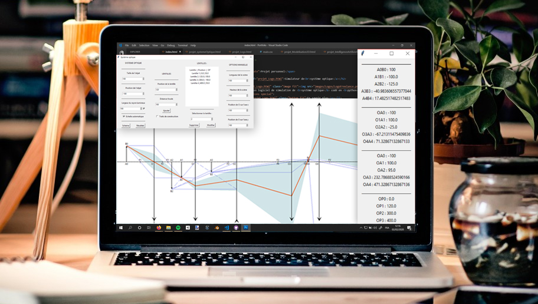

Python/Pytorch, Docker, GitHub, Slicer 3D, LateX, ITK-Snap, Blender 3D, Pack Office
Projet étudiant

Programmation d’un logiciel en C++ pour générer des modèles 3D de végétation à l’aide du système Lindenmayer (L-System).
C++, Blender 3D
Projet personnel

Programmation d'intelligences artificielles optimisée à l’aide d'algorithmes génétiques pour apprendre à conduire ou à tirer à l’arc dans un environnement virtuel.
Projet personnel

Modélisation de plusieurs objets/modèls 3D .
Utilisation de nombreux logiciels
Projet personnel

Création d'un logiciel de simulation de système optique codé en python
Projet personnel

Création de logo sur 5euros.com en freelance
Utilisation de Photoshop et/ou Blender 3D.
Projet étudiant

réalisation d'un prototypage de site web destiné à une agence de voyage fictive.